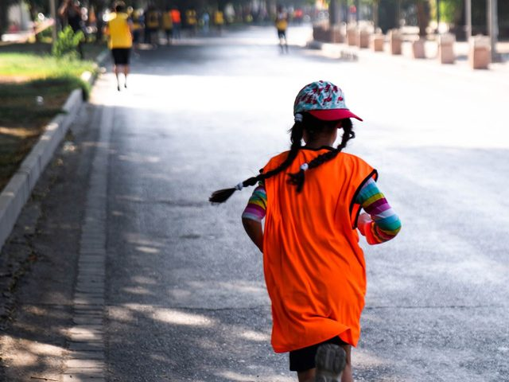
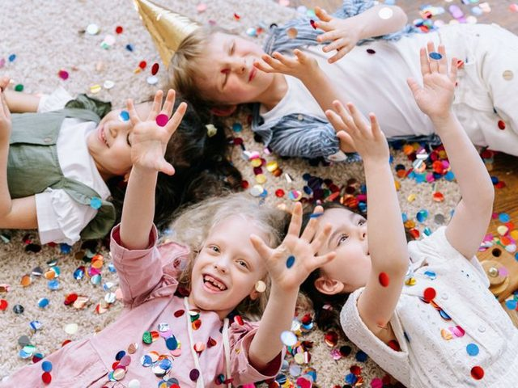
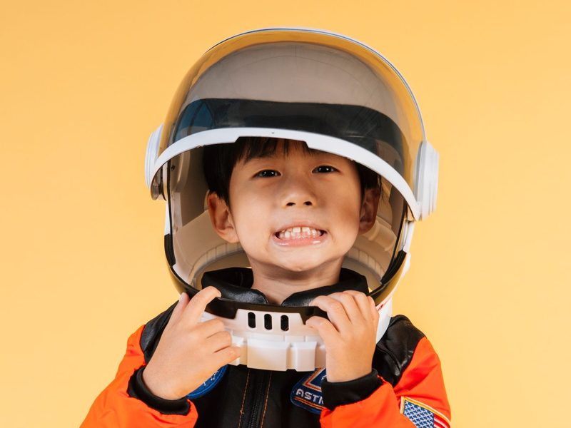

UNIT 20 · VOCABULARY
F 開頭（三）
F-III
38 個單字聽・唸・用
本單元單字一覽
WORD UP「F-III」的 38 個字（foreign 到 future）。紅色＝要複習，藍色標籤＝WORD UP 標熟記、還要在這裡考對。
foreignforeignerforestforgetforgiveforkformformalformerfortyforwardfourfourteenfoxFrancefrankfreefreedomfreezerFrenchfreshFridayfriendfriendlyfriendshipfrightenFrisbeefrogfrontfruitfryfullfunfunctionfunnyfurniturefurtherfuture
每個字都有 🔊，先聽發音、跟著唸，再看例句。
單字 1–4
🌐
foreign
外國的adj.
Can you speak any foreign languages?
你會說任何外語嗎？
你會說任何外語嗎？
🧳
foreigner
外國人n.
Many foreigners visit Taipei 101.
很多外國人參觀台北 101。
很多外國人參觀台北 101。

forest
森林n.
Many animals live in the forest.
很多動物住在森林裡。
很多動物住在森林裡。
🤦
forget
忘記v.
Don't forget to bring your book.
別忘了帶書。
別忘了帶書。
單字 5–8
🕊️
forgive
原諒v.
Please forgive me.
請原諒我。
請原諒我。

fork
叉子n.
Eat the cake with a fork.
用叉子吃蛋糕。
用叉子吃蛋糕。
form
表格；形式；形成n./v.
Please fill in this form.
請填寫這張表格。
請填寫這張表格。
🤵
formal
正式的adj.
You should wear formal clothes to the party.
去派對你應該穿正式服裝。
去派對你應該穿正式服裝。
單字 9–12
⏮️
former
以前的；前者adj.
He is a former teacher.
他以前是老師。
他以前是老師。

forty
四十n.
My mom is forty years old.
我媽媽四十歲。
我媽媽四十歲。

forward
向前adv.
I look forward to seeing you.
我期待見到你。
我期待見到你。
🐾
four
四n.
A dog has four legs.
狗有四條腿。
狗有四條腿。
單字 13–16
🔢
fourteen
十四n.
My brother is fourteen.
我哥哥十四歲。
我哥哥十四歲。

fox
狐狸n.
The fox is clever.
狐狸很聰明。
狐狸很聰明。

France
法國n.
Paris is in France.
巴黎在法國。
巴黎在法國。

frank
坦白的adj.
To be frank, I don't agree.
坦白說，我不同意。
坦白說，我不同意。
單字 17–20
🆓
free
自由的；免費的；有空的adj.
Are you free tonight?
你今晚有空嗎？
你今晚有空嗎？

freedom
自由n.
Everyone wants freedom.
每個人都想要自由。
每個人都想要自由。

freezer
冷凍庫n.
Put the ice cream in the freezer.
把冰淇淋放進冷凍庫。
把冰淇淋放進冷凍庫。
French
法國的；法文adj./n.
I want some French fries.
我想要一些薯條。
我想要一些薯條。
單字 21–24

fresh
新鮮的adj.
These vegetables are fresh.
這些蔬菜很新鮮。
這些蔬菜很新鮮。
🎉
Friday
星期五n.
Thank God it's Friday!
感謝老天，星期五了！
感謝老天，星期五了！
friend
朋友n.
I want to make friends with her.
我想和她交朋友。
我想和她交朋友。
😊
friendly
友善的adj.
The people here are very friendly.
這裡的人很友善。
這裡的人很友善。
單字 25–28

friendship
友誼n.
Our friendship is very important to me.
我們的友誼對我很重要。
我們的友誼對我很重要。
😱
frighten
使害怕v.
The loud noise frightened the baby.
巨大的聲響嚇到了寶寶。
巨大的聲響嚇到了寶寶。

Frisbee
飛盤n.
Let's play Frisbee on the grass.
我們在草地上玩飛盤吧。
我們在草地上玩飛盤吧。

frog
青蛙n.
A frog jumped into the pond.
一隻青蛙跳進池塘。
一隻青蛙跳進池塘。
單字 29–32
🔝
front
前面n./adj.
There is a tree in front of my house.
我家前面有一棵樹。
我家前面有一棵樹。

fruit
水果n.
Eat more fruit and vegetables.
多吃蔬菜水果。
多吃蔬菜水果。

fry
油炸；煎v.
Mom fried some eggs for breakfast.
媽媽早餐煎了幾顆蛋。
媽媽早餐煎了幾顆蛋。

full
滿的；飽的adj.
I'm full. I can't eat any more.
我飽了，吃不下了。
我飽了，吃不下了。
單字 33–36

fun
樂趣；有趣的n./adj.
Have fun at the party!
派對玩得開心！
派對玩得開心！
⚙️
function
功能n.
This phone has many functions.
這支手機有很多功能。
這支手機有很多功能。
funny
好笑的adj.
The joke is really funny.
這個笑話真好笑。
這個笑話真好笑。

furniture
家具n.
We bought some new furniture.
我們買了一些新家具。
我們買了一些新家具。
單字 37–38
➡️
further
更進一步的；更遠adj./adv.
For further information, call us.
想知道更多資訊，請打給我們。
想知道更多資訊，請打給我們。

future
未來n.
What do you want to be in the future?
你將來想做什麼？
你將來想做什麼？
容易搞混的字
| 字 | 用法 | 例子 |
|---|---|---|
| fun / funny | 有趣（好玩）／ 好笑 | The trip was fun. ／ The clown is funny. |
| four / fourteen / forty | 四 ／ 十四 ／ 四十（沒有 u） | four ／ fourteen ／ forty |
| friend / friendly / friendship | 朋友 ／ 友善的 ／ 友誼 | a good friend ／ a friendly dog ／ true friendship |
| foreign / foreigner | 外國的 ／ 外國人 | a foreign country ／ a foreigner |
| forget / forgive | 忘記 ／ 原諒 | forget his name ／ forgive me |
| formal / former | 正式的 ／ 以前的 | a formal letter ／ my former school |
furniture 不可數，不能加 s：some furniture ／ a piece of furniture。
常考片語
| 說法 | 中文 | 例子 |
|---|---|---|
| in front of | 在…前面 | in front of the school |
| look forward to + V-ing | 期待做… | look forward to meeting you |
| have fun | 玩得開心 | We had a lot of fun. |
| be full of | 充滿 | The box is full of toys. |
| make friends with | 和…交朋友 | make friends with new classmates |
| forget to V / forget V-ing | 忘記要做 ／ 忘記做過 | forget to lock the door ／ forget locking it |
快問快答：中文 → 英文
1外國的foreign
2森林forest
3原諒forgive
4表格；形式；形成form
5以前的；前者former
6向前forward
7十四fourteen
8法國France
快問快答：英文 → 中文
1free自由的；免費的；有空的
2freezer冷凍庫
3fresh新鮮的
4friend朋友
5friendship友誼
6Frisbee飛盤
7front前面
8fry油炸；煎
學完了！接下來
複習方法
review
- 回到「📗 單字卡」，按「遮中文」自己考自己
- 再按「遮英文」，看中文說出英文
- 每個例句跟著 🔊 唸一次
準備好了
- 按右上角「📝 前往測驗」
- 測驗錯的題目要訂正到全對
- 訂正完成補送 1 點